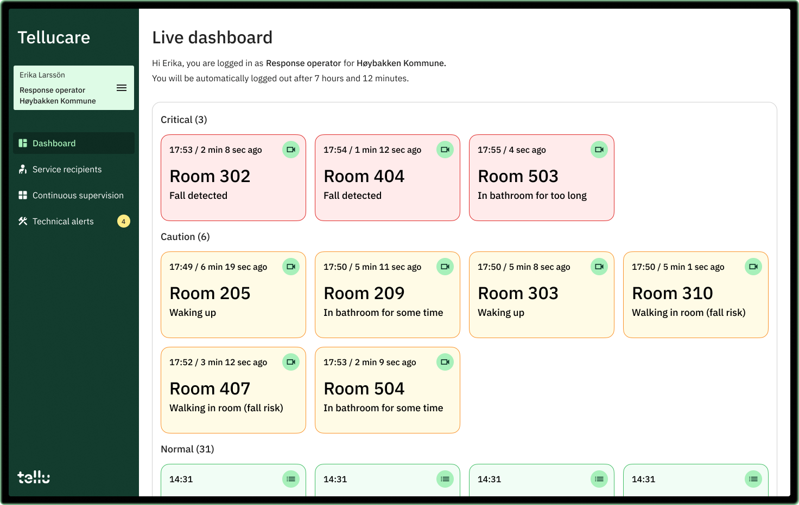

Hi, I'm Dhri. 👋🏼
I am a senior UX designer, building intuitive & delightful digital solutions to complex technical challenges.
As a multidisciplinary potato, I'm also:
- an engineer with a background in structural engineering
- the founder of the ceramics marketplace - Handmud
- a ceramics artist at Studio Dhri
- a beginner coder
Case study
Redesigning AI camera based alarm system for senior homes at Tellu.
This project shows how design could define strategic direction for a company, while improving products.
Read more
Case study
Building a hyperlocal marketplace for handmade ceramics.
A social innovation project, connecting independent ceramic artists to local customers in their community.
Read more
Case study
Making the morning commute calmer with Metro Light.
How designing with razor focus on user needs makes delightful products.
Read more
I am a Norwegian-Indian UX designer, based in Oslo.
With my broad background spanning interaction design, industrial design, structural engineering & business, I feel at home in interdisciplinary teams.
I thrive in inquisitive, ambitious design teams which tailor their methods and processes to the project at hand, rather than following framework recipes.
Download my resume in PDF